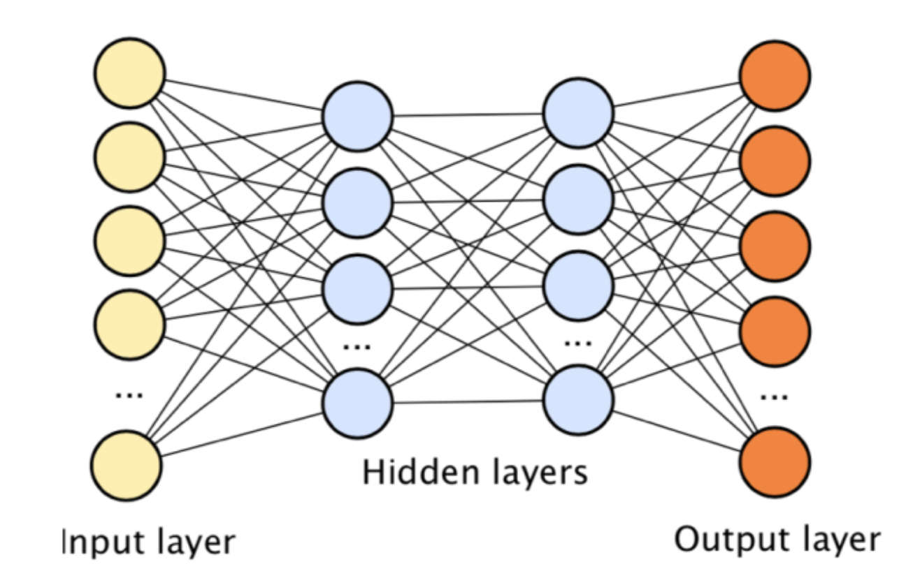
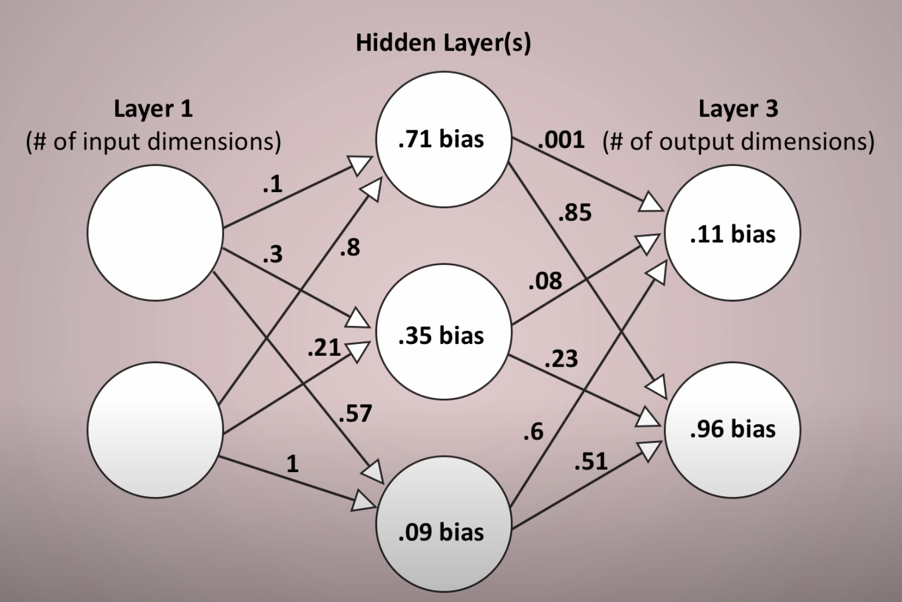

Review of how data moves through a neural network by Max Z.
Neural Networks are a type of algorithm that are widely used in the field of machine learing and more specifically, deep learning. Their purpose is to approximate a complex mathematical function which takes in inputs and returns outputs. Neural Nets are comprised of layers of nodes, and their function-like nature is the reason you can see the input and output nodes on either side of the model.
The aspect of neural networks that was the most confusing to me at first was how data moved through the entire system. So I'll try to make it very clear here. In order to explain, I'm also using visuals from a youtube video by LearnCode.academy linked below, since it really cleared up a lot of things for me as well.
First, numerical data is entered into the input layer, and flows along the arrows into the nodes in the hidden layer. Along the way, these numbers are multiplied by the weights on those arrows. When the resulting values arrive at the nodes, all the values at each node are summed and the bias is added. Finally, the activation function is applied to get the final value at each node. From there the process repeats until the values reach the output node.
There are a number of other details to consider when designing a Neural Network. That same video by LearnCode.academy has a number of opinions about this. First is the number of Hidden Layers, oftentimes, there is only one, but increasing the number of layers may be able to increase the complexity of the function. A good rule is to start with one, and should it not be sufficient, increase from their. Second is the number of nodes in each layer. Good rules of thumbs for these are to be midway between number of input and output nodes if there is a drastic difference between the two, and less than two times the number of input nodes. Finally, there is the activation function, which can be switched between the likes of tanh, ReLU, and sigmoid for added non-linearity.
I've observed throughout my time working on ML and specifically neural nets that they are capapble of astonishing tasks.
If I had previously been shown a graph of a 3 layer network and been told that it would be able to identify MNIST characters at a level almost on par with the human brain, I would've told you that you're crazy. I had previously though that Machine Learning was a black box with concpets too hard for the average person to grasp, but now I understand that beauty in ML emerges from simplicity in how it works. Once you understand that a large part of ML is just numbers flowing through these neural nets, your appreciation for this field increases even more.
As of now, I've already done some research into the calculus behind Gradient Descent and Back Propagation, but I'd really like to now how its implemented in code
Sources/Extra Readings: